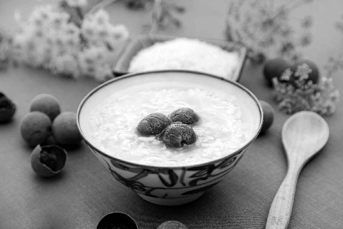
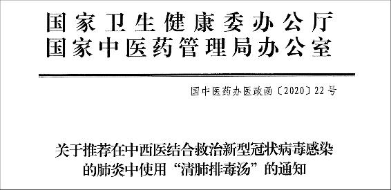

清肺排毒汤方意中所蕴含的几个经方、食疗方，是普通家庭也能用得上的。这几个经方也有中成药，而且非常实用。方中所用到的茯苓、陈皮，更是祛湿的好食材。

这一场疫病的传染性很强，被感染的人出现乏力、发热、咳嗽、呼吸困难等各种症状，甚至在痛苦中离世。万家闭户，街巷萧瑟。
一个大家族200多人，病死率竟接近70%。
…………
这一幕发生在1 800余年前的中国。
大疫出大医。
“感往昔之沦丧，伤横夭之莫救”——那个大家族中幸存的一人，怀着悲天悯人之心，发奋“勤求古训、博采众方”，穷尽毕生心血研究出济世活人的良方，写成一部医学巨著。
它“借一病为万病立法”，既可用于治疗疫病，又可用于治疗各科内伤杂病。
自此之后的1 800余年间，这本传世经典在多次疫病暴发时，都发挥过巨大作用。现在我们对抗新冠肺炎，也主要依靠这本书的思想来治病救人。
这位伟大的医生就是张仲景，后世尊称他为“医圣”。
这部伟大的医书就是《伤寒杂病论》，后世尊称它为“启万世之法程，诚医门之圣书”。
在新冠肺炎疫情期间，国家卫健委先后发布的几版中医诊疗方案中，都有源自它的治法和药方。最后发布的推荐方清肺排毒汤，更是由《伤寒杂病论》中的几个经典药方组成的合方。
我在2020年2月8日写文推荐了清肺排毒汤，以及它所包含的4个经典中成药处方和2个食疗方。清肺排毒汤的实际疗效如何呢？
2月17日，国务院联防联控机制新闻发布会上介绍，最新数据：10个省用清肺排毒汤治疗新冠肺炎701例（包括重症），目前有效率94%。
这次时疫发生后，出现了不少治疗的中药方，有国家卫健委和各省权威发布的，有各地医院自拟的，有专家或民间医生推荐的。在众多药方中，我给大家推荐的是清肺排毒汤。
这个方子是由几个经方组成的合方，普适性较强。
在疫情蔓延、专业中医人员短缺的时候，做到一人一方很难，所以，推广这种方子是好办法。
如今看来，它的效果确如预期——10省治疗701例，目前661例有效。对其中有详细病例信息的351例分析显示：重症患者中已有50%转为普通型或治愈，而所有的轻型、普通型患者没有一例转为重型或者危重型。
其实清肺排毒汤还有一个好处是：不仅可以治疗新冠肺炎，也可以治疗其他肺炎、流感重症和咳喘发热。
这意味着，没有确诊的疑似病例也可以用，不会在等待确诊时贻误最佳治疗时机。而且它药性相对平和，比服用现代抗病毒药物更安心。
—本文于2020年2月18日发表
扫描上方二维码，观看“万世医宗”视频
那么，了解这个方子对于没有生病的朋友们有什么意义呢？虽然大家可能用不到清肺排毒汤这个合方，但是方意中所蕴含的几个经方、食疗方，是普通家庭也能用得上的。
其实很多人平时也服用过这几个经方的中成药，它们都是经典的中成药，而且非常实用，只是很多人日用而不知。
了解这些中成药，不仅自己和家人在发热、咳嗽、得流感的时候可以用，而且还能在一些慢性病患者身上用，尤其是身体湿气很重的时候显出奇效。
清肺排毒汤来源于张仲景《伤寒杂病论》中的几个经方，这些经方现在都做成了中成药。
（1）麻杏石甘汤的中成药：麻杏止咳糖浆、麻杏止咳片等。
这个方子治疗热性咳喘，常用于急性肺炎、急性支气管炎。
（2）射干麻黄汤的中成药：寒喘丸。
这个方子治疗寒性咳喘，咳嗽伴有痰鸣音的可以用。
（3）小柴胡汤的中成药：小柴胡颗粒。
肺炎、流感患者，如果退热后，又反复地发热，就可以用小柴胡颗粒。
（4）五苓散的中成药：五苓胶囊。

肺排毒汤处方：麻黄9克，炙甘草6克，杏仁9克，生石膏15〜30克(先煎)，桂枝9克，泽泻9克，猪苓9克，白术9克，茯苓15克，柴胡16克，黄芩6克，姜半夏9克，生姜9克，紫菀9克，冬花9克，射干9克，细辛6克，山药12克，枳实6克，陈皮6克，藿香9克。
组成：麻黄、甘草、杏仁、石膏。
汗出而喘，无大热者，可与麻黄杏仁甘草石膏汤。
——《伤寒杂病论》
中成药：麻杏止咳糖浆、麻杏止咳片等。
这个方子的高明之处：它仅有4味药，却可治大病。常用来治疗急性肺炎、急性支气管炎等，是治疗热喘的代表方。
组成：桂枝（肉桂）、泽泻、猪苓、白术、茯苓。
太阳病，发汗后，大汗出，胃中干，烦躁不得眠，欲得饮水者，少少与饮之，令胃气和则愈；若脉浮、小便不利、微热消渴者，五苓散主之。
——《伤寒杂病论》
中成药：五苓胶囊。
这个方子被誉为“利水第一方”，常用来治水肿，其实脂肪肝、肝硬化、肝腹水患者都能用到它。
其中的桂枝温补肾阳，茯苓健脾祛湿，为《顺时生活：2020健康日历》书中推荐的今年疫情期间两个保健食方（桂芝陈皮羹、七宝粥）的首味食材。
组成：射干、麻黄、半夏、细辛、紫菀、冬花、五味子、生姜、大枣。
咳而上气，喉中水鸡声，射干麻黄汤主之。
——《伤寒杂病论》
中成药：寒喘丸。
这个方子治疗寒喘，喉中有湿鸣音、痰鸣音的。“水鸡”就是田鸡（青蛙），比喻患者喉中有痰鸣声如同蛙鸣。这是痰阻气道的表现。原方中的五味子被称为“嗽神”，既治病又滋补，能补五脏之气。
组成：柴胡、黄芩、半夏、人参、甘草、生姜、大枣。
伤寒五六日，中风，往来寒热，胸胁苦满，嘿嘿不欲饮食，心烦喜呕，或胸中烦而不呕，或渴，或腹中痛，或肋下痞硬，或心下悸，小便不利，或不渴，身有微热，或咳者，小柴胡汤主之。
——《伤寒杂病论》
中成药：小柴胡颗粒。
肺炎、流感患者，如果退热后，又反复地发热，就可以用小柴胡颗粒。
其实小柴胡的用法特别多，许多急性病、慢性病甚至疑难杂症都能用上它，关于它的妙用可以讲上三天。
注意到了吗？以上两方中都有生姜和大枣，这两样是仲景先师最常使用的食疗药。《伤寒论》有113个药方，其中55个药方用到姜、枣，用来健脾护胃、补中益气，提高人体的抗病能力和自愈能力。
为什么这么多年来，我一到立夏就提醒大家喝两个月姜枣茶呢？我想您现在会更加理解其中的好处。
以上组方，每次服药后喝大米汤半碗，津液亏虚者服一碗。
我在《回家吃饭的智慧》一书里写过：米汤是“穷人的人参汤”，用粳米（大米分粳米、籼米两种）熬制更好。
其实米汤的妙用，也是源自仲景先师。
在《伤寒论》中，粳米也是一味药，有7个药方用到它。粳米能保胃气，这对于患者是非常重要的——“有胃气则生，无胃气则死”！
这也是为什么，我一直强调吃主食的重要性。
注意清肺排毒汤是治疗方，不要当作预防方使用。预防疾病，通过食物来增强体质才是正道。
在仲景先师的经方中，70%的方子含有食物——大枣、生姜、蜂蜜、百合、米、麦，这些都是经方里的重要药物。
今年（2020年）正月十八就是仲景先师1 870年诞辰。每年我都会在我的微信公众号里举办万人在线祭拜仪式。三年前，我怀着虔诚感恩之心写下了祭辞。值此疫病横行之时，更加缅怀为中医学做出伟大贡献的医圣先师。
感恩医圣泽被后世，祈福中华。
感恩老祖先留下了这么好的瑰宝，中华子民蒙祖先之荫护，感恩！感恩国家强大，感恩生在中华。
——英子
我国中医的传统文化是先辈留给咱们的宝贝，我们应该一起把它传承下去，让更多人参与进来，不至于在以后遇到这样的病毒侵袭而不知所措。
——么么哒
关于“清肺排毒汤”的文章，真的值得每个人认真研读。文章不仅以临床实例说明疗效，更以无可辩驳的解析使我们“既知其然，又知其所以然”。不仅指导我们现在怎么办，还能防患于未然，“等到下一次时疫来临”，虽然“具体的方子会变化，但是治病、防病的思路和原理是一样的”，这些文章就像明灯一样。
——三馨
袁**问：中医最让人觉得可悲的地方就是：1 870年后，还在用1 870年前的方子。
允斌答：这正是我认为可敬可佩的地方呢——长达1 870年的临床应用证明安全有效。浩如烟海的古方，能够流传并应用至今的必是经过大浪淘沙筛选出来的。时间是最好的验证。
读者“清风生酒舍，皓月照书窗”追评：上下五千年不才出了一位孔子吗？古人给我们留下这么宝贵的东西，我们应该感到幸福。
钱胖子问：老师，中医虽好，可现在的中药材，质量怎么保证？
允斌答：这个真的是悲哀了。不过，现在管理法规越来越严格，相信今后会更好。
以下重点介绍清肺排毒汤方意中蕴含的祛湿特效方，同样出自医圣张仲景，我们可以把它们做成简单好用的祛湿食疗方，平时保健也可以吃。
清肺排毒汤中蕴含了两类中医传统的祛湿经典方，一类是二陈汤类方（以陈皮、半夏为主药），一类是苓桂类方（以茯苓、桂枝或肉桂为主药）。
这两类祛湿方都源自张仲景的经方。其中，苓桂类方几乎都是药食同源的方子。
苓桂类方对于寒湿伤及心肺（症状有胸闷、头晕、呼吸困难、心阳衰竭）者有特效，可以防治肺炎引起的心脏问题。
它对于大寒节气以后（时气：2019年己亥年冬的湿+2020年庚子年春的寒）的新冠肺炎治疗乃至预防可以说是特别适合。（参阅“疫情期第三阶段：2020年2月4日—3月20日”，见本书第19页）。
现代人普遍湿气重，特别是经常在空调环境中的人，大多是有湿又有寒，所以苓桂类方平时用的机会也很多。茯苓是滋补品，肉桂是调料，平时做饭、做茶饮都可用。
苓桂类方：以茯苓、桂枝（我推荐用肉桂）为基础，配伍不同的药就形成了以下的千古祛湿名方。
配白术、甘草为苓桂术甘汤
治疗心肺功能差引起的心悸、浮肿、心脏病、老年咳喘、美尼尔氏病（又称内耳性眩晕或发作性眩晕，为内耳的一种非炎症性疾病，主要症状为阵发性眩晕、耳鸣、耳聋），等等。
配白术、猪苓、泽泻为五苓散
祛湿方中的利水第一方，身体浮肿松软、假性口渴、水肿、糖尿病、脂肪肝、新生儿黄疸、婴儿湿疹等疾病的治疗，都能用到它。
配五味子、炙甘草为苓桂味甘汤
老年人、肾气虚，可以用它祛湿。
配生姜、甘草为茯苓甘草汤
胃虚寒的人可以用它祛湿。
配大枣、炙甘草为苓桂枣甘汤
心脾两虚的人可以用它祛湿。
以上这些都是以茯苓、桂枝（肉桂）为基础，配伍不同的中药，而形成的祛湿方子。
这些方子里面，茯苓、肉桂、五味子、白术、生姜、大枣、甘草……都是药食同源的材料。
可以说，这些方子，除了五苓散，其他都是药食同源方。我们也可以参考这些方子，根据自己的体质选择不同的组合加在日常饮食中来祛湿。
例如，老年人想祛湿，又有些肾虚的，可以常吃茯苓、肉桂和五味子（苓桂味甘汤的搭配），煮代茶饮时适当加点甘草。血虚的人，通常心脾两虚，可以常吃茯苓、肉桂和大枣（苓桂枣甘汤的搭配）来滋补。
别小看这些寻常食材，搭配起来的效果有时比纯粹的药物还好，这就是经典名方的高明之处，既有特效，又不伤脾胃。诚如古人所说，以食入药，“用食平疴（疾）”，可谓良医啊！
看到这里，按照《顺时生活：2020健康日历》书中推荐的2019年深冬到2020年初春的食方，坚持每日吃茯苓、肉桂的朋友们，是不是特别想分享一下自己的亲身体验呢？
是的，大家食用后体验到的功效，历代无数人也曾体验过，并与我们一样深感神奇。
茯苓、肉桂在这段特殊时期（注：新冠肺炎疫情期间）可以用于提高身体抵抗力，也是我一年四季每日必吃的。
茯苓，全家老小都能吃，它和银耳一样，至为平和，“久服无弊”，没有副作用。茯苓粥（茯苓加杂粮）、茯苓粉加鸡内金蒸鸡蛋，是我家每日的早餐。
肉桂，我把它比作“补肾药中的君子”，既是一味好药又是厨房调料，平时炖肉、做食方用处很多。我喝咖啡时，也会加肉桂粉一起饮用。它不仅能增强咖啡的功效，也能给咖啡增添香味和甜味。
总之，祛寒湿有特效的苓桂组合，不仅可入药方，也可入食方。我们日常饮食中，可以用各种方法来吃它们。
陈老师，我是跟着您顺时而食了5年的忠实读者。这么多年，一路走来，身体哪里有点不对，直接找您书中对症的食疗方就搞定！我觉得，还是平时养生更好一些，等到生病了才去找医生，会让自己损失更多。
——仁者不忧
养生知道不吃什么比吃什么更重要，养生就在一粥一饭之间。
——煜
这些年跟着老师学着养生理念，一家人身体康健，父母虽然慢慢老去，但没有病痛的折磨，孩子平安长大，便应该感恩知足。
——琪儿
用鸡内金、茯苓粉蒸鸡蛋羹，再加入焯水的西兰花碎，妙不可言！
——KL快乐人生
很高兴看到中医治疗发挥了重要作用。
——柳学忠
这个米汤，我爱到骨子里。有一天突然悟到这是无论什么体质，生病与否都可以喝的。于是去年夏天我们家开始用姜枣茶搭配着米汤服用，一直坚持到现在，儿子的头发变得浓密乌黑了，冬季爱感冒的老公，一冬平安无恙。所以我现在逢人就推荐米汤，用米汤煮过的米来蒸饭吃，还可以有效控制血糖。
——倩倩
读者问：老师一直强调要吃粳米，吃主食，可现在人都说粳米湿气，是碳水化合物，没什么营养，说南方湿气重，更不能吃粳米，要吃糙米，老师您怎么看？
允斌答：由于发音相似，很多人把“粳米”和“精米”搞混了。粳米是大米的品种，可以制成精米也可制成糙米。
Lucy问：陈老师，我很喜欢咖啡的味道，加入适量的罗汉果代糖和肉桂粉喝着特别香，每日早餐后都很期待喝上一杯。春季养肝排毒，还能继续喝吗？
允斌答：咖啡也有燥湿的作用，它是苦温的，所以在《回家吃饭的智慧》里我建议大家冬季可以常喝，但其他季节，如果想喝咖啡也可以，特别是脾胃有寒湿或常食生冷的人。只要喝了觉得舒服，就可以喝。
叶琴问：陈老师，前段时间感冒后咳嗽有白痰，我喝了（您的食方）蒸大蒜蜂蜜水，咳嗽倒是缓解了，就是牙龈有点微痛，请问，是大蒜造成的胃热吗？
允斌答：在《回家吃饭的智慧》一书中我说过，牙龈微痛为寒，可以用胡椒粉煮鸡蛋来引火归元。
为什么在各种治疗新冠肺炎的方子中，当初我独选这一个推介呢？因为我觉得它对大家有四个意义：
1. 起效快（1个疗程3服药），既能抗病毒，又能修复肺部损伤。
2. 轻、中、重症都能治，疑似病例、确诊病例都能用。
3. 平时咳喘、发热及流感重症也能用（建议咳喘比较重的才用，若只是普通肺炎高烧，建议用更安全平和的蚕沙竹茹陈皮水退热、鱼腥草消炎就可以了）。
4. 其组方来源有现成的中成药，一些家庭常见病用得上。
所以，它真的值得大家关注和了解。既知其然，又知其所以然。待到下一次时疫来临，具体的方子会变化，但是治病防病的思路和原理，都是相通的。
2020年2月19日，国家卫健委将清肺排毒汤纳入《新型冠状病毒感染的肺炎诊疗方案（试行第六版）》，并明确可用于治疗轻型、普通型、重型患者。
看具体病例——
1．武汉居家病例：自行按方抓药，服用2服药后好转
该男性1月22日出现新冠肺炎症状，去定点医院打了针，当时退热，后反弹，两天一夜高烧39〜39.5℃。吃药无效，医院无床位。
2月8日，病情加重，开始呼吸困难。
2月9日，收到亲戚找中药馆按清肺排毒汤处方煎好的汤药（3服药只花费100多块钱），下午服第1服。
2月10日，出现流汗、咳痰，“刚开始以为有什么问题，后面才知道是转好的表现。2服喝下后，症状缓解，体温恢复正常，但仍有一些咳嗽、气短等症状”。
3服药服完后（清肺排毒汤1个疗程只需3服药），精神状态良好，身体体征平稳。在中医指导下服用方剂善后。
2. 武汉住院重症病例：服用药物一服半，脱离呼吸机
一男性患者使用克力芝等抗病毒药5天仍不退热，呼吸衰竭，用呼吸机也呼吸困难。服用清肺排毒汤一服半，大汗淋漓，烧退后呼吸平稳，不需要呼吸机辅助呼吸，精神好转。后又服用几天，已经康复出院。
3. 河北住院病例：肾移植患者
河北省中医院收治的新冠肺炎确诊患者有一例是肾移植患者，第1个疗程3服药按原方，第2个疗程适当调整药物剂量。已顺利出院，恢复良好。
选上面这个肾移植病例分享给大家，是因为有些人质疑清肺排毒汤中的细辛有肾毒性，质疑细辛的剂量超过了《中国药典》的规定。这是片面的理解。其实中药是要配伍和煎煮的。就像生茄子也有毒，但我们还是天天吃，道理差不多。
我自己是尝过很多细辛的，那些年吃过的细辛加起来将近9斤（4 500克）了，上一次试药是8年前。8年已过，我身体至今安好。
药必亲尝，才可真正认识它，才能给别人用。我一直信奉这个理念。
可能在有些人看来这种方法属于传统中医文化“落后”的一面。现代的方式是给小白鼠吃，给参加实验的患者吃。这个当然是科学的做法。不过我愿意守着那个“落后”的做法，大家就当是我个人的一种执念吧。
附子，我吃得比细辛更多。试过一次性大剂量服用，也试过煎煮时间最短多少才不会产生反应。
其实附子才是真正有毒的，甚至能致死，但是合理炮制、煎煮后则无毒，能救治危难重症患者。所以国家卫健委的诊疗方案中，对于新冠肺炎危重症患者，提到了附子。
还有生首乌（未经炮制的何首乌，须配伍并久煮去毒）……正因为家里几代人都吃，我自己也吃，我才敢向大家推荐治疗老胃病的家传方何香猪肚汤。
我相信每个切实地用身心感受过中药效果的人，都能体会到：这些药，真的是我们的先辈经过不知多少人的实践才为我们发现的救命良药。
生为中国人，有缘继承这份遗产，我们三生有幸！
身为中国人，如何传承这份文化，我们任重道远！
生首乌直接让小鼠服下，会造成严重的肝损伤。而炮制过的何首乌非但没有肝毒性，反而会对肝脏有很好的保护作用，能显著降低其他药物造成的肝损伤。中药就是这么神奇。
——子非鱼
药必亲尝，才可真正认识它，才能给别人用。老师，看这篇文章，我热泪盈眶。庆幸，我生在中国；庆幸，我热爱中医。
——琛
印象中，《茶包小偏方，喝出大健康》里的169个茶方，每一个陈老师都亲身用过。特别感动，因为慈悲。
——一丹
作为广东人，我对于中药是非常认可的，从喝的凉茶到煮汤用的药材，无不感受到中医、中药的存在。陈老师后面的文字，让我懂得了老师对于今天中医药境地的痛心，吾辈自当传承！
——李贵珠
药为何物？药既是毒，也是药，会用的人是药，不会用的人就是毒，用物质的偏性纠正身体的另一种偏性，这就是医生用药的方法，用药如用兵。
——北国风吹
虽然大多数人还是不了解中医，没有关系，不急，时间是最好的见证。
——姚真
生的和炮制的附子我都吃过。生附子，在《中国药典》里，小剂量就能让牛中毒，但是含有大剂量的生附子，用武火煎得的四逆汤是可以起死回生的良药。炮制的附子，是可以温补肾阳的良药。
——焰
我热爱中医，并不是完全依附于陈老师和书本，或是一些专家的所言，而是自己每一样食材吃下后而出现的感觉，那种神奇的感觉才是一直让我相信和热爱中医的引路人。
——Really
从35岁到40岁的几年中，我服的中药里都有制附子，医治我身体的寒湿和失眠，之后，我就一直按着中医方式生活，到如今已有十几年，但对食材的物尽其用还是跟随允斌老师后才知道的。
——雪梅
很庆幸年前从图书馆借了一套陈老师的《回家吃饭的智慧》，才使这个年过得更加充实，并从中学到很多实用、实惠、简单的方子!
——JOB夕月
生为中国人，有中医药的庇护，我何止是三生有幸！
——天然呆
“有胃气则生，无胃气则死”，第一次听到这句话是在2014年老师的现场讲座上，现在我还记得您当时举的例子，但对当时的我而言，就是笔记上的一句话而已。直到大前年的冬至前一天，深刻理解了。
——一丹
向允斌老师致敬！一个能自尝9斤（4 500克）细辛的人，是何等敬业，何等负责任！就为了验证民间传说的细辛有毒！
——大平
允斌点评：母亲说过，只有自己敢吃，并且愿意给亲人吃的东西，才能推荐给别人吃。
AppLe问：陈老师，有没有可以治幽门螺杆菌的方子？一家人都感染了。
允斌答：何香猪肚汤治这个效果很好。
天街问：去年冬天用生首乌煲汤，发现能助眠，于是经常煲汤，每次都放两片生首乌，一个冬天吃了约半斤（250克），结果夜尿（以前晚上基本不尿），尿色淡，甚至接近无色，后来不敢吃了。现在想想，（何香猪肚汤）用生首乌配伍小茴香是有道理的。
允斌答：对，何香猪肚汤如此搭配是经验积累得来的。
流绪微梦问：陈老师，我肠胃虚寒，胃胀，年前吃了七次何香猪肚汤，基本好了。可前两天不知是泡菜吃多了，还是怎么回事，又犯了两次，当时吃了陈皮蜂蜜茶缓解，效果也很好！我还有必要再喝何香猪肚汤吗？（没有胃幽门螺杆菌）
允斌答：若不再犯就不用吃了。平时用养胃饮食调理。